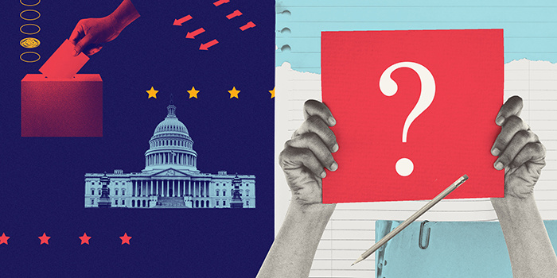

The Capital Punishment Project works toward the repeal of the death penalty in the United States through strategic litigation, advocacy, public education, and training programs for capital defense teams.



The ACLU works in courts, legislatures, and communities to defend and preserve the individual rights and liberties that the Constitution and the laws of the United States guarantee everyone in this country.
The Criminal Law Reform Project seeks to end harsh policies and racial inequities in the criminal justice system.
Striving for an America free of discrimination against people with disabilities, where they are valued, integrated members of society with full access to education, homes, health care, jobs, voting, and beyond.
Protecting free speech means protecting a free press, the democratic process, diversity of thought, and so much more. The ACLU has worked since 1920 to ensure that freedom of speech is protected for everyone.
The ACLU uses litigation, lobbying, public education, and organizing at the state and federal levels to fight discrimination against people living with HIV.
The ACLU Human Rights Program (HRP) is dedicated to holding the United States accountable to international human rights laws and standards as well as the rights guaranteed by the U.S. Constitution.
The fundamental constitutional protections of due process and equal protection embodied in our Constitution and Bill of Rights apply to every person, regardless of immigration status.
Youth are still developing, so as a result society treats kids and adults differently in several contexts, such as driving and serving in the military. Yet in the criminal justice system, we treat youth as adults.
The ACLU works to ensure that lesbian, gay, bisexual, transgender and queer people can live openly without discrimination and enjoy equal rights, personal autonomy, and freedom of expression and association.
The ACLU’s National Security Project is dedicated to ensuring that U.S. national security policies and practices are consistent with the Constitution, civil liberties, and human rights.
The National Prison Project is dedicated to ensuring that our nation’s prisons, jails, and detention centers comply with the Constitution, domestic law, and human rights principles.
The ACLU works to expand the right to privacy, increase the control individuals have over their personal information, and ensure civil liberties are enhanced rather than compromised by technological innovation.
The ACLU Racial Justice Program aims to preserve and extend constitutionally guaranteed rights to people who have historically been denied their rights on the basis of race.
The ACLU strives to safeguard the First Amendment’s guarantee of religious liberty by ensuring that laws and governmental practices neither promote religion nor interfere with its free exercise.
The ACLU works to ensure that every person can make the best decision for themselves and their family about whether and when to have a child without undue political interference.
The ACLU Campaign for Smart Justice is an unprecedented, multiyear effort to reduce the U.S. jail and prison population by 50% and to challenge racism in the criminal legal system.
Voting is the cornerstone of our democracy and the fundamental right upon which all our civil liberties rest. The ACLU works to protect and expand Americansʼ freedom to vote.
Today, gender bias continues to create huge barriers for many women. Ongoing struggles include ensuring equal economic opportunities, educational equity, and an end to gender-based violence.
Learn about what's happening across the most pressing civil liberties issues of our time, and what you can do.